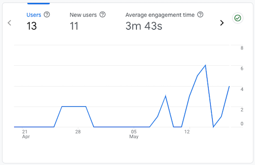
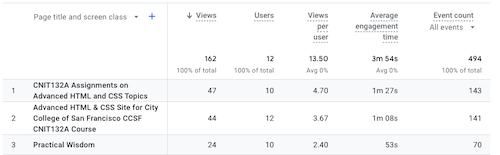
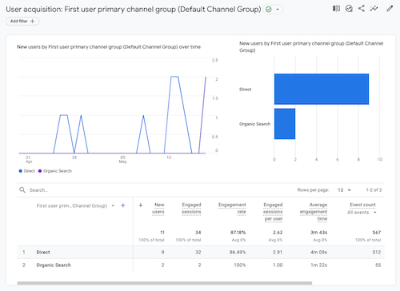

Google Analytics Analysis
According to the Google Analytics website, Google Analytics (GA) is a web analytics service offered by Google that tracks and reports website traffic and also the mobile app traffic & events, currently as a platform inside the Google Marketing Platform brand. Google launched the service in November 2005.
At the beginnging of this CCSF Advanced HTML & CSS course, I added the Google Analytics Tag to the four main pages of this website, to track visitor activity. Over the past week I have invited friends and colleagues to visit pages, and last weekend I completed the first part of this week's homework assignment on SEO, including adding search keywords to headers and pages within the site. GA can be used to identify trends and patterns in how visitors engage with my site.
Visitor Engagement
Average engagement time in the top left shows that the 12 users that have visited the site in the past 14 days spend an average of 3m 54 seconds with my site in the foreground their web browser.
What are the top three pages with the highest engagement?
The Pages and screens section, when selected shows the top pages viewed, and average engagement time for these pages, which include:
- Assignments page, average engagement 1m27s
- Home page, average engagement 1m8s
- Practical Wisdom page (my favorite), average engagement 53s
How do visitors find this site?
The “Where do users come from” box shows that the top category is Direct,
which means that these website visitors typed the URL for a webpage in their browser bar (or in my case
I shared the site link with a number of people directly.
I also have two visitors that discovered the site by “Organic Search”.
I am very curious as these visitors happened over the past 24 hours.
I completed the SEO part of this assignment last weekend,
so perhaps this is already paying off!
The full Google Analytics Report Snapshot is available to download.
312 words :)